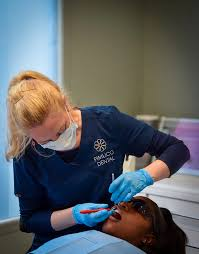

Severe Toothache
Persistent or intense tooth pain may indicate an underlying problem that needs dental assessment.
Request AssessmentSudden tooth pain, a broken tooth, or unexpected dental discomfort can be stressful. Our dental team can assess your concern and discuss the appropriate next steps.

Severe facial or mouth swelling that affects breathing or swallowing, uncontrolled bleeding, or a serious injury needs emergency medical attention. Contact your local emergency service or go to an emergency department immediately.

Dental problems can happen unexpectedly. Getting an appropriate assessment can help identify the cause of your symptoms and determine the next step.
At SmileCare Dental Clinic, we listen to your concerns, assess your dental needs, and explain suitable treatment options based on your condition.
If you experience any of these problems, contact a dental professional for advice about the appropriate timing and type of care.
Persistent or intense tooth pain may indicate an underlying problem that needs dental assessment.
Request AssessmentA damaged tooth should be assessed, especially when there is pain, bleeding, or sharp edges.
Request AssessmentSwelling around the gums or face can be a sign of infection and should not be ignored.
Request AssessmentA tooth knocked loose or out after an injury requires urgent professional advice.
Request AssessmentPersistent or heavy bleeding needs prompt evaluation to identify its cause.
Request AssessmentA loose crown, broken filling, or damaged dental appliance may need repair or replacement.
Request AssessmentThese simple steps may help you protect the affected area while arranging professional care. They do not replace a dental examination.
Explain your symptoms and when they started so the urgency can be assessed.
Avoid chewing on a damaged tooth and do not try to repair or reposition it yourself.
Follow the instructions provided by your dental team while arranging care.

We aim to make your dental visit clear, supportive, and focused on your individual concerns.
Understand your symptoms and discuss appropriate treatment with a dental professional.
Receive explanations about your condition and the available treatment options.
Your comfort, concerns, and dental needs remain central to the care plan.
Contact SmileCare Dental Clinic to discuss your dental concern and request an appointment.
Contact SmileCare